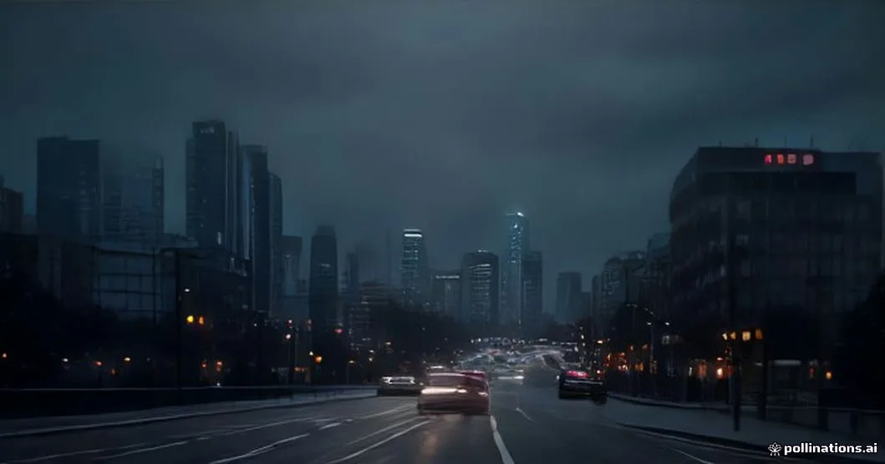
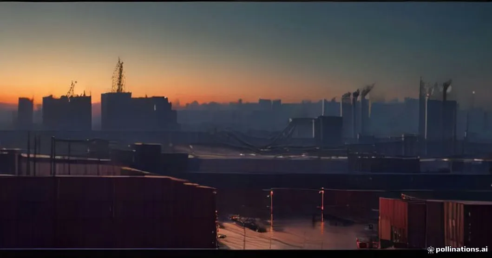
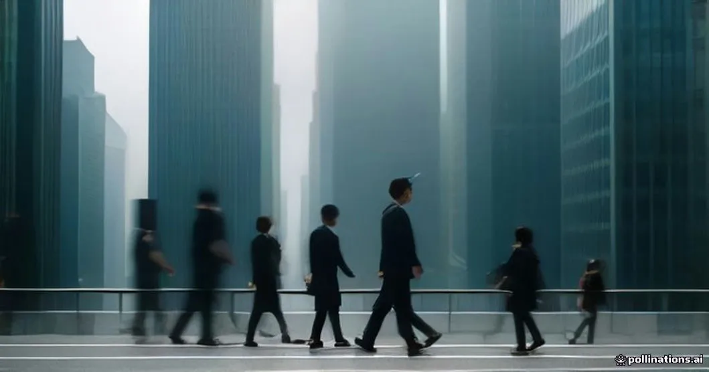

AI 생성 이미지
11월 17일 아침 · 기술주 내림 뒤, 오늘 밤 엔비디아 실적
오늘 실제 묶음 파일: S&P 500 −1.91% · 기술 −2.39%(가장 많이 내림) · 엔비디아 실적 → 소재 기술 · 분위기 급락
소재 tech · 분위기 plunge · 미국 장면 · 22KB
장면 설명
a semiconductor cleanroom and data center corridor with engineers in protective suits in an American city, dark evening, building lights still on, streets quieter than usual, cool blue tones, heavy mood, cinematic editorial photograph for a premium business magazine, 35mm lens, natural light, realistic, wide establishing shot, people seen from a distance or from behind with faces not in focus, no recognizable landmarks, no brand logos, no readable signs, no text, no letters, no numbers, no watermark
AI 생성 이미지
(예시) 크게 오른 날
지수 +1% 이상 → 맑은 아침 · 빠른 출근 인파
소재 finance · 분위기 strong_up · 미국 장면 · 29KB
장면 설명
a financial district street between glass skyscrapers with office workers walking in an American city, clear bright morning, strong sunlight reflecting on glass buildings, fast moving energetic crowd, cinematic editorial photograph for a premium business magazine, 35mm lens, natural light, realistic, wide establishing shot, people seen from a distance or from behind with faces not in focus, no recognizable landmarks, no brand logos, no readable signs, no text, no letters, no numbers, no watermark
AI 생성 이미지
(예시) 방향 못 정한 날
등락 작고 VIX 높음 → 안개
소재 corporate · 분위기 uncertain · 미국 장면 · 19KB
장면 설명
a modern glass office lobby and meeting room seen through windows, business people working in an American city, light fog between buildings, people busy but the far end of the scene hazy, cinematic editorial photograph for a premium business magazine, 35mm lens, natural light, realistic, wide establishing shot, people seen from a distance or from behind with faces not in focus, no recognizable landmarks, no brand logos, no readable signs, no text, no letters, no numbers, no watermark
AI 생성 이미지
(예시) 급락한 날 · 도시
지수 −1.5% 이하 → 어두운 저녁 · 한산한 거리
소재 city · 분위기 plunge · 미국 장면 · 21KB
장면 설명
a wide city skyline with streets and traffic in an American city, dark evening, building lights still on, streets quieter than usual, cool blue tones, heavy mood, cinematic editorial photograph for a premium business magazine, 35mm lens, natural light, realistic, wide establishing shot, people seen from a distance or from behind with faces not in focus, no recognizable landmarks, no brand logos, no readable signs, no text, no letters, no numbers, no watermark
AI 생성 이미지
(예시) 반등한 날 · 물류
전날 내림 뒤 오름 → 새벽빛
소재 logistics · 분위기 rebound · 미국 장면 · 18KB
장면 설명
a container port with cranes, trucks and workers in an American city, first light of dawn rising over a dark city, people starting to move again, warm light returning, cinematic editorial photograph for a premium business magazine, 35mm lens, natural light, realistic, wide establishing shot, people seen from a distance or from behind with faces not in focus, no recognizable landmarks, no brand logos, no readable signs, no text, no letters, no numbers, no watermark
AI 생성 이미지
(예시) 저녁판 · 한국 마감
저녁 21:00 편은 한국 장면
소재 finance · 분위기 mild · 한국 장면 · 21KB
장면 설명
a financial district street between glass skyscrapers with office workers walking in Seoul, Korea, soft overcast light, calm and steady atmosphere, cinematic editorial photograph for a premium business magazine, 35mm lens, natural light, realistic, wide establishing shot, people seen from a distance or from behind with faces not in focus, no recognizable landmarks, no brand logos, no readable signs, no text, no letters, no numbers, no watermark